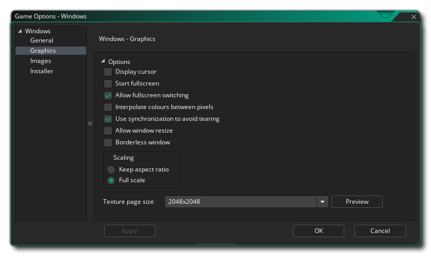

本节概述了可用于控制 Windows 游戏项目编译方式的不同选项。不同的部分如下：

Windows 游戏的 全局 页面是你应该为 Windows 提供必要信息的地方，以便在游戏安装和运行时显示。此信息位于 产品信息 部分，应完整填写。
此窗口的 选项 部分允许你选择要安装游戏包的位置，可以是 “%localappdata%” 或 “%appdata%” 文件夹。你也可以在此处设置 Windows 睡眠余量。此选项与在特定系统上运行游戏时减少停顿（stutter）有关。基本上，如果你的游戏运行速度超过你的房间速度，GameMaker Studio 2 将在剩余时间内 “睡眠”，但这种睡眠可能会非常不准确经常睡眠时间超过必要的时间，导致你的框架需要更长时间才能导致停顿。为了解决这个问题，我们可以在更短的时间内休眠，然后在其余的时间内进行紧密循环以使其更准确 - 尽管进行循环中的问题是它会导致 CPU 使用率增加，这反过来可以导致 CPU 温度上升，风扇运行得更快。默认情况下，此值设置为 10，在 99.99％ 的情况下，你可以使用它，但对于低端计算机或运行大量后台进程的计算机，这可能不是一个理想的解决方案（或非常高端的机器也可能需要 1 或 15 或某些值。请注意，这是一个非常特定于系统的配置，并且在你的构建计算机上运行的可能不适合其他用户，因此如果有疑问则将其设置为 10。
最后一个选项是在游戏中启用 Steam。如果启用此选项，请确保已安装 Steamworks SDK（请参阅 此处），并且已将 Steam 应用程序 ID 添加到游戏的 全局选项 中。

图形选项是你应该配置的选项，以确定你的游戏将如何使用目标 Windows 计算机的显卡。 包含以下选项供你修改：包含以下选项供你修改：
- 显示光标： 选中此选项后，将显示全局 Windows 光标，取消选中它将意味着除非你在游戏代码中创建了光标，否则不会显示光标。该选项默认为“开”。
- 开始全屏： 如果选中此项，游戏将以全屏模式启动，否则将以窗口模式启动。该选项默认关闭。
- 允许全屏切换： 通过此选项，用户可以使用标准的 Windows 快捷键从全屏切换到窗口并再次返回。该选项默认关闭。
- 对像素间颜色进行插值： 打开插值，基本上会使像素 “平滑”。对于清晰的像素图形，它应该关闭，但如果你有漂亮的 透明混合和平滑的边缘图形，最好保持开启。默认情况下这是开启的。
- 启用垂直同步避免画面撕裂： 这会打开或关闭垂直同步（垂直同步用于将游戏更新速度与监视器的刷新率同步）。请注意，如果你的游戏房间速度为 120 且玩家显示器的刷新率为 60，则启用此选项会将你的游戏速度锁定为 60。该选项默认关闭。
- 允许玩家调整游戏窗口的大小： 选中此项允许用户更改游戏窗口的大小（需要 关闭 无边框窗口 选项才能使其生效）。该选项默认为关。
- 无边框窗口： 选中此选项将使你的游戏以无边框窗口运行，删除正常的最小化、最大化和关闭按钮以及游戏标题。该选项默认关闭。
- 缩放: 在这里，你可以选择保持纵横比（因此 4:3 的房间将被封装成 16:9 的盒子）或完全缩放（拉伸图像以适应整个屏幕）。
警告！ 关闭应用程序表面将禁用 Windows 游戏选项中设置的所有缩放选项，直到它再次重新打开。有关详细信息，请参阅 应用程序表面。最后，可以选择设置纹理页的大小。 默认（和最兼容）的大小是 2048 x 2048，但你可以选择 256 x 256 到高达 8192 x 8192 之间的任何位置！还有一个标记为预览的按钮，它将生成此平台的纹理页，然后打开一个窗口以便你可以看看他们的样子。如果你希望查看纹理页面的结构并防止纹理页面比必要的更大（或更小），这可能非常有用。
注意： 请注意，纹理页的大小越大，你在具有更低规格的 Windows 上的游戏兼容性就越低。

图像部分是你提供游戏所需图像的位置。图像部分是你提供游戏所需图像的位置。对于 Windows，你需要提供图标文件（必须采用 .ico 格式）以及启动画面（可以是 .png、.bmp、.jpg 或 .gif 格式）。 加载游戏时将显示启动画面，可以通过选中 使用启动画面 选项（默认情况下关闭）启用或禁用启动画面。
值得注意的是，GameMaker Studio 2 有一个叫做 项目图像生成器 的工具，可用于自动创建游戏编译到不同目标平台所需的所有图像。 如果使用此工具，则应修改创建的图像以确保它们符合你的要求。

可以使用安装程序创建 Windows 游戏，你可以在此处定义 GameMaker Studio 2 在创建时将使用的各种设置和图形。 首先，我们有图形选项，它们将定义安装程序本身的外观：
- 完成： 安装程序 “完成” 页面上显示的图形。 必须采用 *.bmp 格式并且大小为 164 x 314 像素。
- 标题： 安装程序运行时显示的图形。 必须采用 *.bmp 格式并且大小为 150 x 57 像素。
如果需要，你还可以指向特定的许可协议（GameMaker Studio 2 提供的示例）和自定义 NSI 脚本（详情请参见 此处）。